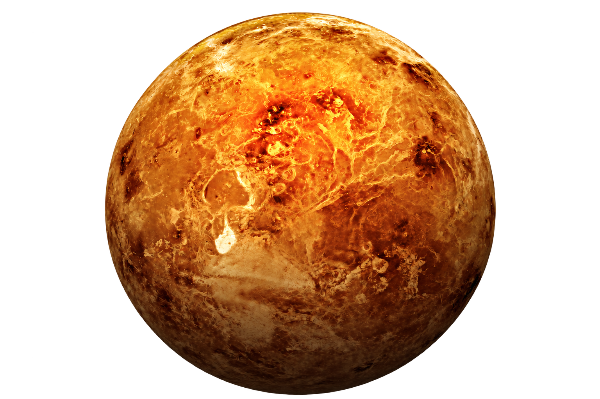

ENTDECKEN / 02 / GESTEINSPLANET
Venus
Eine Welt unter dichten Wolken.
Venus ähnelt der Erde in ihrer Größe, besitzt jedoch eine völlig andere Umwelt. Ihre dichte Atmosphäre besteht überwiegend aus Kohlendioxid. Ein starker Treibhauseffekt erhitzt die Oberfläche auf etwa 465 Grad Celsius. Damit ist Venus heißer als Merkur, obwohl sie weiter von der Sonne entfernt ist.
Mehr erfahren 04 / 18 THEMEN
WISSEN / IM DETAIL
Eine Welt unter dichten Wolken.
Wolken aus Schwefelsäure verdecken die Oberfläche. Radaruntersuchungen zeigen Vulkane und weite Ebenen. Venus dreht sich sehr langsam und entgegen der üblichen Rotationsrichtung der meisten Planeten. Eine Drehung relativ zu den Sternen dauert länger als ihr Jahr. Als heller Morgen- oder Abendstern ist sie von der Erde aus gut sichtbar.
Diese Welt ist Teil eines größeren Zusammenhangs. Entdecke über die Themenübersicht weitere Himmelskörper und vergleiche ihre Eigenschaften mit unserer Erde.
Sachquelle: NASA Science ↗Zahlen sind gerundet. Umlaufzeiten beziehen sich auf Erdtage bzw. Erdenjahre.
DEIN NÄCHSTES ZIEL
Der Kosmos wartet.
Das Sonnensystem ↗
Ein Stern. Acht Planeten. Unzählige Geschichten.
Der Stern im ZentrumDie Sonne ↗
Die Energiequelle unserer Welt.
01 / GesteinsplanetMerkur ↗
Kleine Welt, große Gegensätze.
03 / GesteinsplanetDie Erde ↗
Unser blauer Heimatplanet.
04 / GesteinsplanetMars ↗
Die rote Welt mit einer nassen Vergangenheit.
05 / GasrieseJupiter ↗
Der größte Planet unseres Systems.
06 / GasrieseSaturn ↗
Ein Planet mit eisigem Schmuck.
07 / EisrieseUranus ↗
Der Planet, der auf der Seite rollt.
08 / EisrieseNeptun ↗
Stürme am Rand der Planetenwelt.
Zwergplanet / KuipergürtelPluto ↗
Kleine Welt mit großer Geschichte.
Der Begleiter der ErdeDer Mond ↗
Eine vertraute Welt voller Spuren.
Natürliche SatellitenDie Monde ↗
Eigene Welten im Gefolge der Planeten.
Kleine Körper / große GeschichteAsteroiden ↗
Gesteinerne Zeugen der Entstehung.
Eisige WandererKometen ↗
Wenn aus einem Eiskern ein Schweif wird.
Acht Welten / ein SternDie Planeten ↗
Von felsigen Nachbarn zu fernen Riesen.
Unsere GalaxieDie Milchstraße ↗
Ein Sternenmeer, in dem wir zu Hause sind.
Der größte ZusammenhangDas Universum ↗
Alles, was Raum und Zeit umfasst.
magnificent desolation